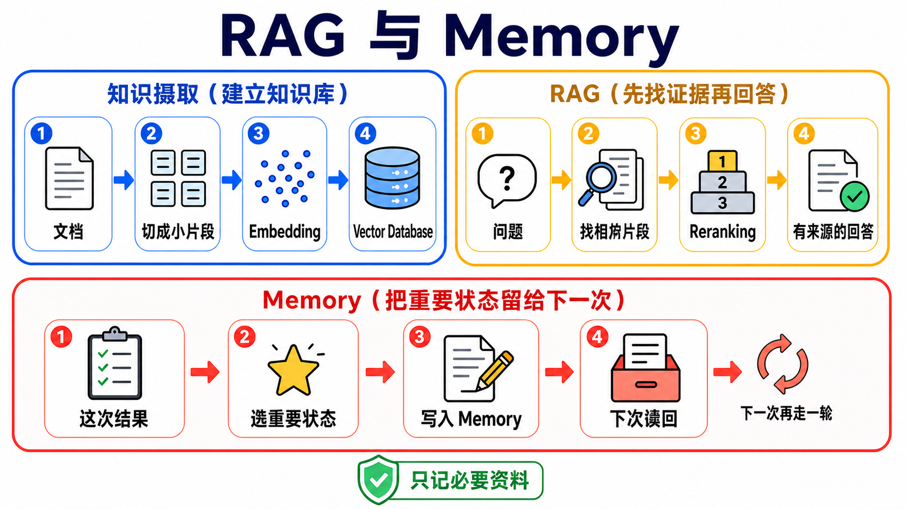
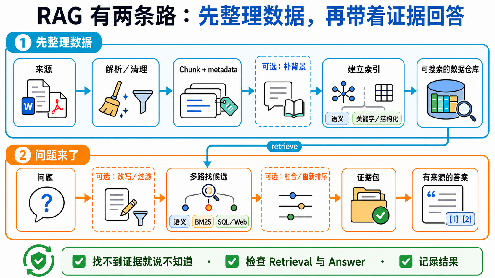

原课程本地核对资料，保留原内容与顺序。外链已改为本地阅读入口。命令中的原仓库路径请按本课运行指南换成实际位置；版本差异见本课说明。MIT © 2026 Wenyu Chiou。
Stage 6 — RAG 与 Memory：先找数据，再记住重要的事
RAG（Retrieval-Augmented Generation）：先找相关资料，再依资料回答。
模型不是什么都知道。RAG 像叫它先翻书再回答；Memory 像给它一本笔记本，记住下次还会用到的事。这一关会把两者分清楚，再带你一步一步做出来。
📌 学习目标
完成这一关后，你可以：
- 用一句话说出 RAG 与 Memory 的差别。
- 看懂数据如何变成 Chunk、Embedding，再被找回来。
- 做出一条最小 RAG 流水线，并让回答附上来源。
- 知道什么数据值得记住，什么数据不该保存。
- 用小型测试比较两个做法，不靠“感觉比较好”。
🧩 先认识七个核心术语
| 核心术语 | 好理解的说法 | 正确意思 |
|---|---|---|
| Retrieval（检索） | 去书架找几页可能有答案的书 | 收到问题后，从外部资料找出相关内容。 |
| RAG（Retrieval-Augmented Generation） | 先翻书，再用自己的话回答 | 先 retrieval，再把找到的内容交给模型生成答案。 |
| Embedding（嵌入向量） | 帮句子的意思做一张坐标卡 | 把文字转成一串数字，让意思接近的文字在向量空间里靠近。 |
| Vector Store／Vector Database | 会按“意思”找卡片的抽屉 | 保存 embedding，并用相似度找回相关资料。 |
| Chunk（文字片段） | 把大书切成可拿取的小页卡 | 为了搜索与放进 context，把长文档切成较小片段。 |
| Reranking（重新排序） | 把第一次找来的卡片再排一次 | 用第二个方法重新评分候选内容，让更可能有用的片段排前面。 |
| Memory（记忆） | 助理自己的笔记本 | 把跨消息或跨 session 还需要的状态写下来，之后再读回来；它不是聊天记录的别名。 |

一张表先选对方法
| 你遇到的问题 | 先考虑 | 为什么 |
|---|---|---|
| 资料不长，而且这次回答用完就好 | Long context | 直接把资料放进这次请求，流程最短。 |
| 文档很多，问题来了才知道要找哪几段 | RAG | 先找相关片段，不必每次塞入全部文档。 |
| 助理下次仍要记得偏好、任务状态或过往结果 | Memory | 把值得保留的信息写入可再次读取的存储层。 |
| 想稳定改变模型的行为或特定能力 | Fine-tuning | 调整模型权重与行为；它不会自动提供最新文档。 |
没有一个选项永远最好。请用自己的资料、问题与成功条件做评测。
🚪 进入条件与阅读路径
- 第一次学： 先读七个核心术语，完成练习 1–4，再做短版自我检查。
- 要做长期助理： 接着完成练习 5，再阅读 Memory 设计。
- 要研究或上线： 最后进入进阶 RAG、Chunking、评测与研究入口。
时间、环境、费用与资料安全
- 建议分两到三次完成；每次先做一个能跑的练习。
- 需要 Python、Git 与终端。安装方式以各练习 README 为准。
- Path A 使用 OpenAI 兼容示例；Path B 使用 Anthropic 路径。模型与 embedding 调用可能产生费用。
- 先用小文档测试。不要把密码、token、医疗资料或未经授权的公司文档送到外部服务。
- API key 放在环境变量，不要写进程序或 commit。
📚 必修阅读
- LangChain Retrieval — 看 loader、splitter、embedding、vector store 与 retriever 如何合作。
- LlamaIndex concepts — 用文档导向的方式理解 indexing 与 querying。
- Chroma getting started — 看本地 vector database 的最小使用方式。
- LangGraph Agentic RAG — 完成基础 RAG 后，再看 agent 如何决定要不要查资料。
🛠 动手练习
每题先回项目根目录（放着 README.md 的那层）。下面会依次进入本题文件夹、安装软件包，再跑本机 Path A。练习 4、5 先依本题说明准备 Ollama、下载 qwen2.5:3b 并启动服务。Path B 是选用；先看本题是否使用云端、供应商、密钥与费用。
练习 1：把两句话变成 Embedding
成果： 你会看到意思相近的两句话，比不相关的句子更靠近。
cd examples/stage-6/01-embeddings
python -m pip install -r requirements.txt
python starter.py
打开安装、检查与选用 Path B 说明。先用很少的句子，避免不必要的 API 费用。
练习 2：把 Embedding 放进 Vector Database
成果： 你能把文字放进 Chroma，再用一句问题找回相关片段。
cd examples/stage-6/02-vector-db
python -m pip install -r requirements.txt
python starter.py
打开安装、检查与选用 Path B 说明。练习资料不得包含秘密或个人资料。
练习 3：比较三种 Chunking 方法
成果： 你会看到切得太大、太小或重叠太多，各自会发生什么事。
cd examples/stage-6/03-chunking-comparison
python -m pip install -r requirements.txt
python starter.py
打开安装、检查与选用 Path B 说明。不要先背一个“标准大小”；先看文档结构与测试结果。
练习 4：串起完整 RAG
成果： 程序会先找资料，再回答，并显示它使用了哪些来源片段。
cd examples/stage-6/04-full-rag-pipeline
python -m pip install -r requirements.txt
python starter.py
打开安装、检查与选用 Path B 说明。先用小型数据集；不要把“程序能跑”当成“回答一定正确”。
练习 5：记住一项偏好
成果： 本练习只会在程序仍运行时新增、搜索并读回一项偏好；临时存储不代表长期持久记忆。
cd examples/stage-6/05-long-term-memory
python -m pip install -r requirements.txt
python starter.py
打开安装、检查与选用 Path B 说明。只保存完成任务需要的资料，并提供查看、修改与删除的方法。
推荐小项目：会查资料、也会记偏好的助理
选三到五份你有权使用的小文档。让助理回答问题时列出来源，再只记住一项无敏感性的偏好，例如“回答先给短版”。成功条件是：找不到证据时会说不知道；重新启动后仍能读回偏好；你可以删除这项记忆。
🌐 RAG 基础流水线
RAG 基础流水线：资料怎么进去，答案怎么出来
RAG 有两条路：一条先整理数据，一条在问题来时找资料。

先从 2-step RAG 开始：每个问题都先检索，再回答，流程最容易测。Agentic RAG 让模型决定要不要找资料、是否改写问题或再找一次；Hybrid RAG 混合固定步骤与 agent 决策。它和 Hybrid Search 不同：Hybrid Search 只是在 retrieval 这一步合并候选。
| 阶段 | 做什么 | 好理解的说法 |
|---|---|---|
| Load | 读入 PDF、网页或数据库内容 | 把书搬到桌上 |
| Split | 切成 chunks | 把书分成小卡 |
| Embed | 把每张卡转成向量 | 帮意思做坐标 |
| Store | 保存向量与来源 metadata | 卡片放进有标签的抽屉 |
| Retrieve | 依问题找候选 chunks | 先拿出可能有答案的卡 |
| Rerank（可选） | 重新排候选内容 | 再检查哪张卡最有用 |
| Generate | 把问题与证据交给模型 | 看着卡片回答 |
| Cite／Evaluate | 显示来源并检查结果 | 告诉别人答案从哪里来 |
Retriever（检索器）按问题找相关文档，不一定使用向量数据库（vector database）。也能用 BM25（按字词匹配排序的方法）找产品编号，用 SQL（查询数据库的语言）查表格，或使用网站搜索、混合搜索。
🧭 想深入？把 RAG 与 Memory 分开学
这两条是 Stage 6 的进阶支线，不是新的先备条件。先完成上面的基础练习，再按问题选一条。
进阶 RAG：先找出哪一步坏了，再加新技巧
已做出最小 RAG，却遇到“找不到、排序错、跨文档关系难找”？到这里先看症状，再选方法。完整技术术语、必读与五星资源都在进阶页。
Agent Memory：只记值得记、允许记、能删掉的事
适合要做跨 session 助理、个人化或长期任务的人。页面会完整解释短期／长期，以及 Semantic、Episodic、Procedural Memory，再走过写入、搜索、更新、删除、过期与用户隔离；Mem0、Letta Code、LangMem、Graphiti 与研究资源都直接列在页面上。
怎么选： 答案需要更好的外部证据，走进阶 RAG；助理下次还要读回自身状态，走 Agent Memory。两者都需要时，分开测试，最后再接起来。
🎯 精选项目与学习资源
这里只保留做出 Stage 6 基线需要的工具。进阶技巧与 Memory 项目已移到上方两个独立页面，避免一张表混在一起。
资料核查：2026-08-30 UTC
| 分类 | 项目／文档 | 评分 | 用途 | 限制 |
|---|---|---|---|---|
| RAG framework | ⭐⭐⭐⭐⭐ | 适合谁： 文档型应用初学者 能学什么： Index、retriever、query engine | 状态／限制： MIT；套件多，先用官方 starter | |
| ⭐⭐⭐⭐ | 适合谁： 想比较模块化 pipeline 能学什么： components、pipelines、routing | 状态／限制： Apache-2.0；先选一套 framework 练习 | ||
| ⭐⭐⭐⭐ | 适合谁： 想看完整 Web 产品的团队 能学什么： 文档解析、retrieval、UI | 状态／限制： Apache-2.0；部署比教学示例重 | ||
| Vector data | ⭐⭐⭐⭐⭐ | 适合谁： 第一次在本机做向量搜索 能学什么： collection、add、query | 状态／限制： Apache-2.0；练习与 production 设置不同 | |
| ⭐⭐⭐⭐⭐ | 适合谁： 需要自建或托管服务的团队 能学什么： dense、sparse、hybrid query | 状态／限制： Apache-2.0；需规划服务与备份 | ||
| ⭐⭐⭐⭐ | 适合谁： 需要 schema 与 hybrid search 能学什么： BM25 + vector search | 状态／限制： wl/ 以外为 BSD-3-Clause；wl/ 另需企业授权；先做小型基线 | ||
| ⭐⭐⭐⭐ | 适合谁： 已使用 PostgreSQL 的团队 能学什么： SQL 与 vector 同库 | 状态／限制： PostgreSQL extension；仍需索引与查询调校 | ||
| 评测与完整产品 | ⭐⭐⭐⭐⭐ | 适合谁： 要建立可重复运行 eval 的团队 能学什么： datasets、metrics、experiments | 状态／限制： Apache-2.0；metric 仍需人工校准 | |
| ⭐⭐⭐⭐ | 适合谁： 想读完整 AI assistant 架构 能学什么： ingest、retrieval、chat、admin | 状态／限制： 完整产品很大；当架构参考，不当 starter |
✅ 进入 Stage 7 前的自我检查
- [ ] 我能说出 Retrieval、RAG 与 Memory 各自做什么。
- [ ] 我能解释 chunk、embedding 与 vector database 怎么接起来。
- [ ] 我的 RAG 回答会显示来源，找不到证据时会说不知道。
- [ ] 我能用一小组问题比较修改前后，而不是只看一次漂亮回答。
- [ ] Memory 只保存必要且获准的资料，用户能查看、修改与删除。
都能做到后，前往 Stage 7 — Agent 上线工程：可测、可看、可停、可恢复。